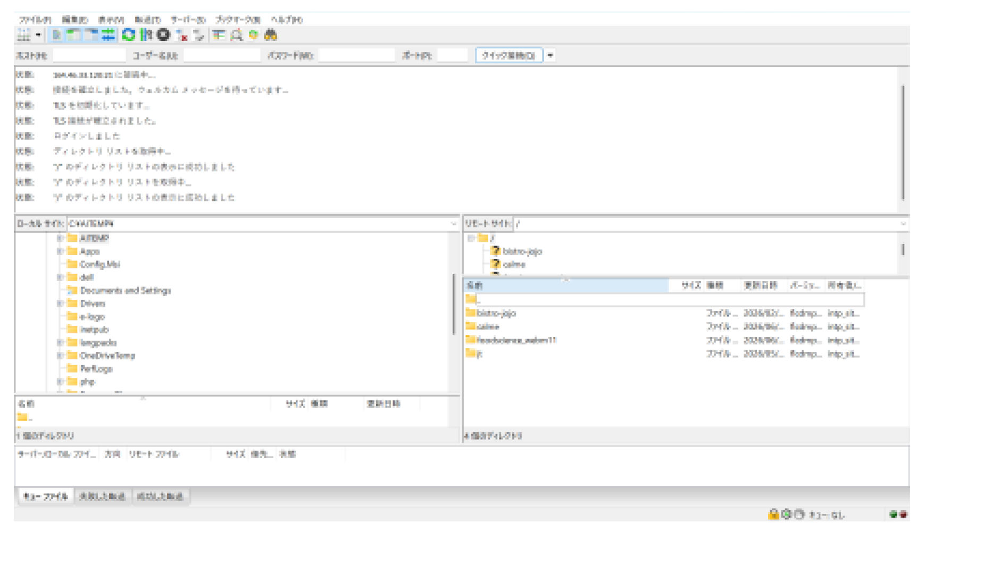

この日のまとめ（ひと言）
今日のテーマは 「作ったサイトをサーバーにアップして公開する」。これまで作ったサイトはパソコンの中（＝ローカル環境）にあるだけ。これを FTPソフト「FileZilla」 でサーバーにアップロードして、初めてネット上に公開される。この「アップロード」が実務での 「納品」 にあたる。サーバー接続情報の準備 → FileZillaのインストール → 接続 → ドラッグ&ドロップでアップ → 上書きの扱い、までを一通り。
⏱タイムマップ（時間割）
タイムスタンプ付き文字起こしベース。★★★＝特に重要。
⭐今日の最重要10項目
1ローカル＝パソコンの中
作ったサイトは今自分のPC内（ローカル環境／開発環境）にあるだけ。まだ誰も見られない。
2公開＝アップロード
サーバーにアップして初めてネットで見られる。このアップロードが実務の「納品」。
3FTPソフトを使う
PCとサーバーを繋ぐのが FTPソフト。今回は定番の FileZilla。
4接続に必要な4情報
ホスト・ユーザー名・パスワード・ポート。学校から届いたメールに書いてある。
5左=ローカル 右=サーバー
FileZillaは左が自分のPC、右が接続先サーバー。この左右の対応が基本。
6左側は壊せる（要注意）
ローカル側は隠しファイルまで見える。間違えて消す/移動するとPCが壊れる。触るのは自分のプロジェクトだけ。
7自分のディレクトリ把握
接続したら自分の受講者フォルダがどこか確認。URL＝ドメイン＋自分の番号＋プロジェクト名。
8アップ＝ドラッグ&ドロップ
左（ローカル）から右（サーバー）へドラッグ&ドロップするだけ。削除も同様。
9同名は上書き確認
同じファイルを上げると「ターゲットファイルは既に存在」。アクションから上書きを選ぶ。
10一括上書きのチェック
「常にこのアクションを使用」にチェックすれば、大量ファイルでも1回で全部上書き。
📧サーバー接続情報を用意する
アップロードの前に、接続先サーバーの情報が必要。これは訓練校からメールで届いている。
届いているメール
- 件名の目安：「サーバーアカウント発行情報」（レンタルサーバー会社から）
- 受講開始のころ（今回は5月11日ごろ）に届いていた古いメール
- この中に ホスト名・ユーザー名・パスワード・ポート が書いてある
探すコツ 受講初期のメールを「サーバー」「アカウント」で検索。見つからないと接続に進めないので最初に確保しておく。
🌐ローカル環境 と 本番環境（＝納品）
今作っているサイトが「どこにあるか」を整理する。ここが今日の考え方の土台。
ローカル環境（今ここ）
- サイトは自分のパソコンの中にあるだけ
- 別名「開発環境」
- 自分しか見られない・作業用
本番環境（公開後）
- サーバー（ウェブ上）にアップロード
- 世界中の誰でもURLで見られる
- この作業が実務の「納品」
A先生の言葉のポイント
「作っているサイトはあくまでパソコンの中に入っている、まさにローカル環境です。最終的にはウェブ上にアップロードする必要がある。このアップロードすることが、我々の業界でいうところの納品とか、最終的な状況になってきます。」
🔌FTPソフトとは（FileZilla）
FTP＝パソコンとサーバーを繋ぐ仕組み
- FTPソフトを使うと、パソコンの中身とサーバーを繋いで（ネットワーク接続して）ファイルをやり取りできる
- FTPソフトはいくつか種類がある（例：FFFTP など）
- 今回この授業で使うのは FileZilla（ファイルジラ） という定番FTPソフト
FileZilla でできること
インストールして起動すると、パソコンの中のディレクトリと、接続したサーバーの中身を並べて見られる。左右でファイルをやり取り（アップロード／ダウンロード）する。
💾FileZillaのインストール
- FileZilla の公式サイトにアクセス
- 自分のOS（Mac / Windows）に合ったFileZilla Clientをダウンロード
- インストールして起動
注意 ダウンロードサイトには広告の「Download」ボタンが紛れていることがある。公式（filezilla-project.org）の本物のボタンから入れること。
🖥️FileZillaの画面構成（左=ローカル／右=サーバー）

▲ 先生の板書：FileZillaの画面。左＝ローカル（自分のPC）／右＝リモート（サーバー）。上部で接続、下部で転送状況を確認
画面の4ブロック
- ① 上部：接続バー（ホスト／ユーザー名／パスワード／ポート＋クイック接続）
- ② 状態ログ：接続やログインの成否が流れる（「ログインしました」等）
- ③ 中央左：ローカルサイト＝自分のパソコンの中身
- ③ 中央右：リモートサイト＝接続先サーバーの中身
- ④ 下部：転送キュー（キュー／失敗／成功のタブで転送状況を確認）
⚠️ローカル側は「壊せる」ので要注意
左側（ローカル）＝プロ向けの全部見える状態
- 普段の Finder / エクスプローラーでは隠しファイルは見えないようになっている
- FileZillaはプロ向けツールなので、PCを構成する隠しファイルまで全部見える
- それらを間違えて削除・移動するとPCが壊れることがある
対策
左側（ローカル）で触るのは自分が作ったプロジェクトフォルダだけ。見慣れないシステム系フォルダ・隠しファイルには手を出さない。
🔑サーバーへ接続（クイック接続）
上部の接続バーに、メールに書かれた4つの情報を入れて接続する。
| 入力欄 | 内容 |
|---|
| ホスト | サーバーのアドレス（メール記載） |
| ユーザー名 | 発行されたFTPアカウント名 |
| パスワード | 発行されたパスワード |
| ポート | 接続ポート番号（指定があれば入力／なければ空欄でも可） |
入力したら 「クイック接続」 を押す。状態ログに 「接続を確立しました」→「ログインしました」→「ディレクトリリストの表示に成功しました」 と流れれば成功。右側（リモート）にサーバーの中身が表示される。
🔒 セキュリティ補足（ノート用）
サーバーのユーザー名・パスワードは他人に渡さない。スクショを人に見せるときは接続情報が写り込んでいないか注意。
📁接続後：自分のディレクトリを把握
サーバーに接続すると、リモート側に複数のフォルダが並ぶ。自分がアップすべき場所（自分の受講者ディレクトリ）がどこかを最初に把握する。
公開URLの構造（匿名化して図解）
https://［訓練校ドメイン］/［受講者番号］/［プロジェクト名］/
│ │ └ 自分で作ったサイトのフォルダ名
│ └ 受講者ごとに割り当てられた番号（自分の領域）
└ 学校が契約しているドメイン（全受講者共通）
※ 実際のドメイン名・自分の番号は
メール記載の値。ここでは伏せて構造だけ示す。
大事な考え方
サーバーは全受講者で共有していることが多い。自分の番号のフォルダの中だけに、自分のプロジェクトをアップする。他人のフォルダは触らない。
⬆️アップロード方法（ドラッグ&ドロップ）
基本操作
- 左（ローカル）→ 右（リモート）へドラッグ&ドロップ＝アップロード
- 逆に 右 → 左 ＝ ダウンロード
- 右側で不要ファイルを選んで削除も可能
- 転送状況は下部のキューで確認（成功した転送タブに移れば完了）
アップ先を間違えない
アップロード先が自分のディレクトリ内になっているか、右側の現在地を確認してからドロップする。
🔁⚠️ 上書きの扱い（同名ファイル）
すでにアップ済みのファイルと同じ名前・同じディレクトリにアップすると、重複するので確認ダイアログが出る。
「ターゲットファイルは既に存在しています」
- このダイアログが出たら、アクションから動作を選ぶ
- 基本は 「上書き」 でOK
- 「ソースが新しければ上書き」＝ローカルの方が新しい時だけ上書き、という選択肢もある
- 一般的には単純に「上書き」で問題なし
大量ファイルの一括上書き
ファイルが多いと1個ずつOKを押すのが大変。「常にこのアクションを使用（全てのキューに適用）」にチェックを入れれば、1回の確認で全部上書きできる。
効率のコツ（A先生）
たった1個のCSSだけ直したのにプロジェクト全部を上げ直すのは非効率。
例：CSSだけ書き直したなら、同じディレクトリに移動してそのファイルだけ上書きすればOK。更新した分だけアップが基本。
🔌切断・終了のしかた
- 作業が終わったら、上部のサーバーのバツ（×）アイコンで切断
- そのあと FileZilla 本体を閉じる
- 接続しっぱなしにせず、使い終わったら切断する習慣を
この後もずっと使う サイト制作のたびに同じ手順でアップロードする。よく使う操作なので、手順をメモして忘れないように（A先生）。
📚用語集
| 用語 | 意味 |
|---|
| ローカル環境 | 自分のパソコンの中の作業場所。別名「開発環境」。自分しか見られない |
| 本番環境 | サーバー上の公開された場所。世界中からURLで見られる |
| サーバー | ウェブサイトを置いて公開するためのネット上のコンピュータ |
| アップロード | ローカルのファイルをサーバーへ送ること。実務では「納品」にあたる |
| ダウンロード | サーバーのファイルをローカルへ取ってくること（アップの逆） |
| 納品 | 制作物を最終的に公開・引き渡すこと。サーバーへのアップが該当 |
| FTP | File Transfer Protocol。PCとサーバー間でファイルを転送する仕組み |
| FTPソフト | FTPを使うためのアプリ。FileZilla・FFFTP など |
| FileZilla | この授業で使う定番のFTPソフト（無料） |
| ホスト | 接続先サーバーのアドレス。接続情報の1つ |
| ポート | 接続に使う番号の口。接続情報の1つ |
| クイック接続 | ホスト等を入れてすぐ接続するFileZillaの機能 |
| ローカルサイト（左ペイン） | FileZillaの左側＝自分のPCの中身 |
| リモートサイト（右ペイン） | FileZillaの右側＝接続先サーバーの中身 |
| ディレクトリ | フォルダのこと。「自分のディレクトリ」＝自分の受講者フォルダ |
| 転送キュー | アップ/ダウンロードの待ち行列・状況。成功/失敗が分かる |
| 隠しファイル | 通常は非表示のシステム系ファイル。触ると壊れることがある |
| 上書き | 同名ファイルを新しい内容で置き換えること |
✅宿題・復習チェック
- 訓練校から届いたサーバーアカウント発行メールを探して手元に用意（ホスト/ユーザー名/パスワード/ポート）
- FileZilla を公式サイトからインストール（広告ボタンに注意）
- クイック接続でサーバーに接続できるか試す（「ログインしました」を確認）
- 接続後、自分の受講者ディレクトリがどこか把握する
- 自分のプロジェクトをドラッグ&ドロップでアップロードしてみる
- 公開URL（ドメイン/自分の番号/プロジェクト名）でブラウザから表示確認
- ファイルを1つ直してその1ファイルだけ上書きアップする練習（更新分だけ上げる感覚）
- 作業後はサーバー切断してから終了する
- 📝 手順をメモ：今後サイトを作るたびに使う操作なので忘れないように
💬先生のことば
作っているサイトはあくまでパソコンの中に入っている、まさにローカル環境です。── 今どこにサイトがあるか
ウェブ上にアップロードする、このアップロードすることが、我々の業界でいうところの納品とか、最終的な状況になってきます。── アップロード＝納品
（左側は）パソコンここから壊せます。隠しファイルはパソコンを構成するファイルとかも入っているので、間違えて移動しちゃったりすると、シンプルに壊れるんですよ。── ローカル操作の注意
この後のサイトを作る時とかもね、同じようにアップロードしてもらうので、ちゃんとメモとか忘れないようにしておいてください。── ずっと使う操作